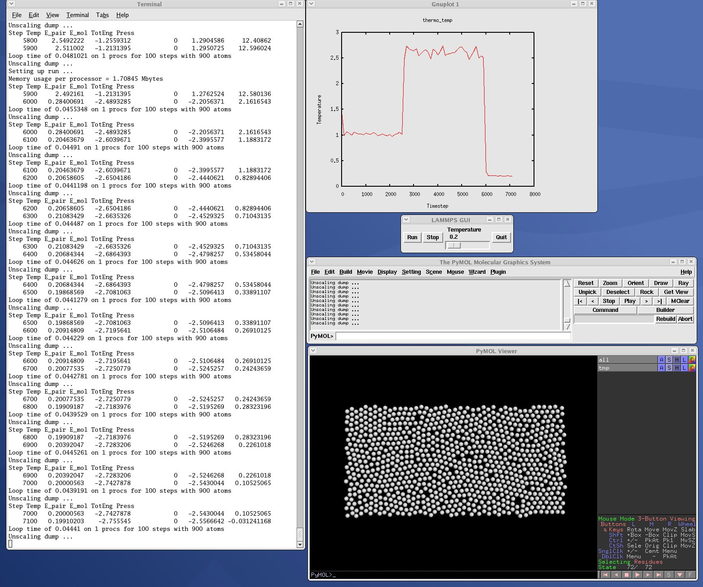
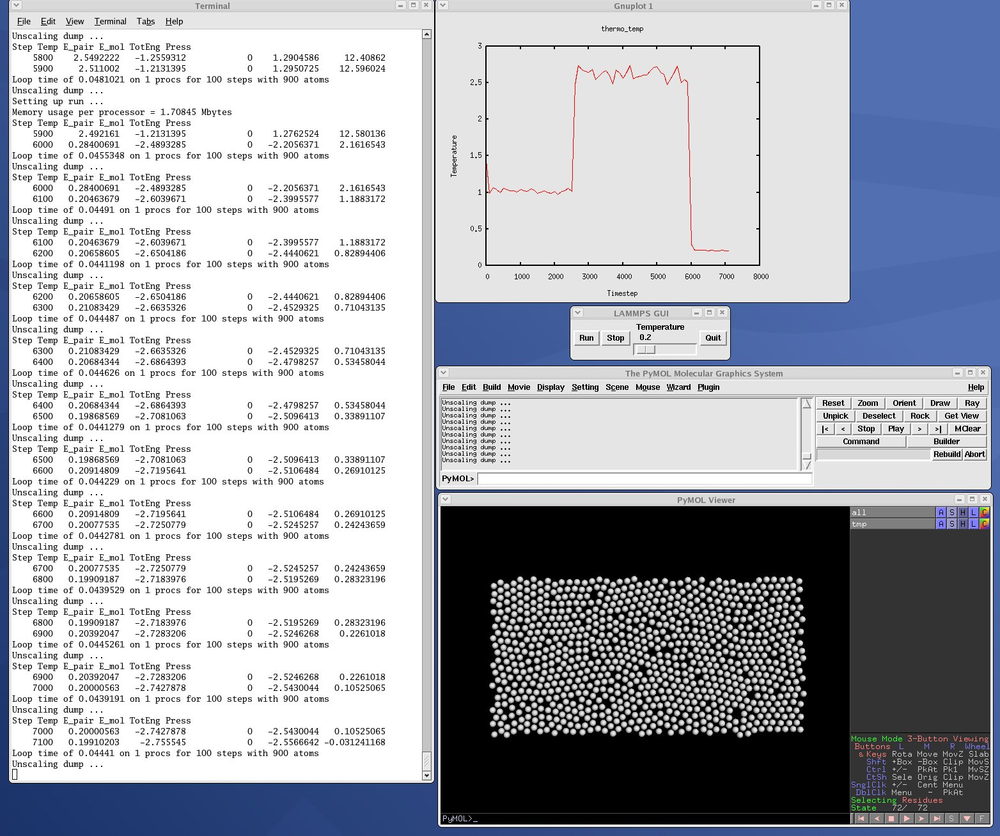

11. Python interface to LAMMPS¶
LAMMPS can work together with Python in two ways. First, Python can wrap LAMMPS through the LAMMPS library interface, so that a Python script can create one or more instances of LAMMPS and launch one or more simulations. In Python lingo, this is “extending” Python with LAMMPS.
Second, LAMMPS can use the Python interpreter, so that a LAMMPS input script can invoke Python code, and pass information back-and-forth between the input script and Python functions you write. The Python code can also callback to LAMMPS to query or change its attributes. In Python lingo, this is “embedding” Python in LAMMPS.
This section describes how to do both.
- 11.1 Overview of running LAMMPS from Python
- 11.2 Overview of using Python from a LAMMPS script
- 11.3 Building LAMMPS as a shared library
- 11.4 Installing the Python wrapper into Python
- 11.5 Extending Python with MPI to run in parallel
- 11.6 Testing the Python-LAMMPS interface
- 11.7 Using LAMMPS from Python
- 11.8 Example Python scripts that use LAMMPS
If you are not familiar with it, Python is a powerful scripting and programming language which can essentially do anything that faster, lower-level languages like C or C++ can do, but typically with much fewer lines of code. When used in embedded mode, Python can perform operations that the simplistic LAMMPS input script syntax cannot. Python can be also be used as a “glue” language to drive a program through its library interface, or to hook multiple pieces of software together, such as a simulation package plus a visualization package, or to run a coupled multiscale or multiphysics model.
See Section_howto 10 of the manual and the couple directory of the distribution for more ideas about coupling LAMMPS to other codes. See Section_howto 19 for a description of the LAMMPS library interface provided in src/library.cpp and src/library.h, and how to extend it for your needs. As described below, that interface is what is exposed to Python either when calling LAMMPS from Python or when calling Python from a LAMMPS input script and then calling back to LAMMPS from Python code. The library interface is designed to be easy to add functions to. Thus the Python interface to LAMMPS is also easy to extend as well.
If you create interesting Python scripts that run LAMMPS or interesting Python functions that can be called from a LAMMPS input script, that you think would be useful to other users, please email them to the developers. We can include them in the LAMMPS distribution.
11.1. Overview of running LAMMPS from Python¶
The LAMMPS distribution includes a python directory with all you need to run LAMMPS from Python. The python/lammps.py file wraps the LAMMPS library interface, with one wrapper function per LAMMPS library function. This file makes it is possible to do the following either from a Python script, or interactively from a Python prompt: create one or more instances of LAMMPS, invoke LAMMPS commands or give it an input script, run LAMMPS incrementally, extract LAMMPS results, an modify internal LAMMPS variables. From a Python script you can do this in serial or parallel. Running Python interactively in parallel does not generally work, unless you have a version of Python that extends standard Python to enable multiple instances of Python to read what you type.
To do all of this, you must first build LAMMPS as a shared library, then insure that your Python can find the python/lammps.py file and the shared library. These steps are explained in subsequent sections 11.3 and 11.4. Sections 11.5 and 11.6 discuss using MPI from a parallel Python program and how to test that you are ready to use LAMMPS from Python. Section 11.7 lists all the functions in the current LAMMPS library interface and how to call them from Python.
Section 11.8 gives some examples of coupling LAMMPS to other tools via Python. For example, LAMMPS can easily be coupled to a GUI or other visualization tools that display graphs or animations in real time as LAMMPS runs. Examples of such scripts are inlcluded in the python directory.
Two advantages of using Python to run LAMMPS are how concise the language is, and that it can be run interactively, enabling rapid development and debugging of programs. If you use it to mostly invoke costly operations within LAMMPS, such as running a simulation for a reasonable number of timesteps, then the overhead cost of invoking LAMMPS thru Python will be negligible.
The Python wrapper for LAMMPS uses the amazing and magical (to me) “ctypes” package in Python, which auto-generates the interface code needed between Python and a set of C interface routines for a library. Ctypes is part of standard Python for versions 2.5 and later. You can check which version of Python you have installed, by simply typing “python” at a shell prompt.
11.2. Overview of using Python from a LAMMPS script¶
Note
It is not currently possible to use the python command described in this section with Python 3, only with Python 2. The C API changed from Python 2 to 3 and the LAMMPS code is not compatible with both.
LAMMPS has a python command which can be used in an input script to define and execute a Python function that you write the code for. The Python function can also be assigned to a LAMMPS python-style variable via the variable command. Each time the variable is evaluated, either in the LAMMPS input script itself, or by another LAMMPS command that uses the variable, this will trigger the Python function to be invoked.
The Python code for the function can be included directly in the input script or in an auxiliary file. The function can have arguments which are mapped to LAMMPS variables (also defined in the input script) and it can return a value to a LAMMPS variable. This is thus a mechanism for your input script to pass information to a piece of Python code, ask Python to execute the code, and return information to your input script.
Note that a Python function can be arbitrarily complex. It can import other Python modules, instantiate Python classes, call other Python functions, etc. The Python code that you provide can contain more code than the single function. It can contain other functions or Python classes, as well as global variables or other mechanisms for storing state between calls from LAMMPS to the function.
The Python function you provide can consist of “pure” Python code that only performs operations provided by standard Python. However, the Python function can also “call back” to LAMMPS through its Python-wrapped library interface, in the manner described in the previous section 11.1. This means it can issue LAMMPS input script commands or query and set internal LAMMPS state. As an example, this can be useful in an input script to create a more complex loop with branching logic, than can be created using the simple looping and branching logic enabled by the next and if commands.
See the python doc page and the variable doc page for its python-style variables for more info, including examples of Python code you can write for both pure Python operations and callbacks to LAMMPS.
To run pure Python code from LAMMPS, you only need to build LAMMPS with the PYTHON package installed:
make yes-python
make machine
Note that this will link LAMMPS with the Python library on your system, which typically requires several auxiliary system libraries to also be linked. The list of these libraries and the paths to find them are specified in the lib/python/Makefile.lammps file. You need to insure that file contains the correct information for your version of Python and your machine to successfully build LAMMPS. See the lib/python/README file for more info.
If you want to write Python code with callbacks to LAMMPS, then you must also follow the steps overviewed in the preceeding section (11.1) for running LAMMPS from Python. I.e. you must build LAMMPS as a shared library and insure that Python can find the python/lammps.py file and the shared library.
11.4. Installing the Python wrapper into Python¶
For Python to invoke LAMMPS, there are 2 files it needs to know about:
- python/lammps.py
- src/liblammps.so
Lammps.py is the Python wrapper on the LAMMPS library interface. Liblammps.so is the shared LAMMPS library that Python loads, as described above.
You can insure Python can find these files in one of two ways:
- set two environment variables
- run the python/install.py script
If you set the paths to these files as environment variables, you only have to do it once. For the csh or tcsh shells, add something like this to your ~/.cshrc file, one line for each of the two files:
setenv PYTHONPATH ${PYTHONPATH}:/home/sjplimp/lammps/python
setenv LD_LIBRARY_PATH ${LD_LIBRARY_PATH}:/home/sjplimp/lammps/src
If you use the python/install.py script, you need to invoke it every time you rebuild LAMMPS (as a shared library) or make changes to the python/lammps.py file.
You can invoke install.py from the python directory as
% python install.py [libdir] [pydir]
The optional libdir is where to copy the LAMMPS shared library to; the default is /usr/local/lib. The optional pydir is where to copy the lammps.py file to; the default is the site-packages directory of the version of Python that is running the install script.
Note that libdir must be a location that is in your default LD_LIBRARY_PATH, like /usr/local/lib or /usr/lib. And pydir must be a location that Python looks in by default for imported modules, like its site-packages dir. If you want to copy these files to non-standard locations, such as within your own user space, you will need to set your PYTHONPATH and LD_LIBRARY_PATH environment variables accordingly, as above.
If the install.py script does not allow you to copy files into system directories, prefix the python command with “sudo”. If you do this, make sure that the Python that root runs is the same as the Python you run. E.g. you may need to do something like
% sudo /usr/local/bin/python install.py [libdir] [pydir]
You can also invoke install.py from the make command in the src directory as
% make install-python
In this mode you cannot append optional arguments. Again, you may need to prefix this with “sudo”. In this mode you cannot control which Python is invoked by root.
Note that if you want Python to be able to load different versions of the LAMMPS shared library (see this section below), you will need to manually copy files like liblammps_g++.so into the appropriate system directory. This is not needed if you set the LD_LIBRARY_PATH environment variable as described above.
11.5. Extending Python with MPI to run in parallel¶
If you wish to run LAMMPS in parallel from Python, you need to extend your Python with an interface to MPI. This also allows you to make MPI calls directly from Python in your script, if you desire.
There are several Python packages available that purport to wrap MPI as a library and allow MPI functions to be called from Python.
These include
All of these except pyMPI work by wrapping the MPI library and exposing (some portion of) its interface to your Python script. This means Python cannot be used interactively in parallel, since they do not address the issue of interactive input to multiple instances of Python running on different processors. The one exception is pyMPI, which alters the Python interpreter to address this issue, and (I believe) creates a new alternate executable (in place of “python” itself) as a result.
In principle any of these Python/MPI packages should work to invoke LAMMPS in parallel and to make MPI calls themselves from a Python script which is itself running in parallel. However, when I downloaded and looked at a few of them, their documentation was incomplete and I had trouble with their installation. It’s not clear if some of the packages are still being actively developed and supported.
The packages Pypar and mpi4py have both been successfully tested with LAMMPS. Pypar is simpler and easy to set up and use, but supports only a subset of MPI. Mpi4py is more MPI-feature complete, but also a bit more complex to use. As of version 2.0.0, mpi4py is the only python MPI wrapper that allows passing a custom MPI communicator to the LAMMPS constructor, which means one can easily run one or more LAMMPS instances on subsets of the total MPI ranks.
Pypar requires the ubiquitous Numpy package be installed in your Python. After launching Python, type
import numpy
to see if it is installed. If not, here is how to install it (version 1.3.0b1 as of April 2009). Unpack the numpy tarball and from its top-level directory, type
python setup.py build
sudo python setup.py install
The “sudo” is only needed if required to copy Numpy files into your Python distribution’s site-packages directory.
To install Pypar (version pypar-2.1.4_94 as of Aug 2012), unpack it and from its “source” directory, type
python setup.py build
sudo python setup.py install
Again, the “sudo” is only needed if required to copy Pypar files into your Python distribution’s site-packages directory.
If you have successully installed Pypar, you should be able to run Python and type
import pypar
without error. You should also be able to run python in parallel on a simple test script
% mpirun -np 4 python test.py
where test.py contains the lines
import pypar
print "Proc %d out of %d procs" % (pypar.rank(),pypar.size())
and see one line of output for each processor you run on.
Note
To use Pypar and LAMMPS in parallel from Python, you must insure both are using the same version of MPI. If you only have one MPI installed on your system, this is not an issue, but it can be if you have multiple MPIs. Your LAMMPS build is explicit about which MPI it is using, since you specify the details in your lo-level src/MAKE/Makefile.foo file. Pypar uses the “mpicc” command to find information about the MPI it uses to build against. And it tries to load “libmpi.so” from the LD_LIBRARY_PATH. This may or may not find the MPI library that LAMMPS is using. If you have problems running both Pypar and LAMMPS together, this is an issue you may need to address, e.g. by moving other MPI installations so that Pypar finds the right one.
To install mpi4py (version mpi4py-2.0.0 as of Oct 2015), unpack it and from its main directory, type
python setup.py build
sudo python setup.py install
Again, the “sudo” is only needed if required to copy mpi4py files into your Python distribution’s site-packages directory. To install with user privilege into the user local directory type
python setup.py install --user
If you have successully installed mpi4py, you should be able to run Python and type
from mpi4py import MPI
without error. You should also be able to run python in parallel on a simple test script
% mpirun -np 4 python test.py
where test.py contains the lines
from mpi4py import MPI
comm = MPI.COMM_WORLD
print "Proc %d out of %d procs" % (comm.Get_rank(),comm.Get_size())
and see one line of output for each processor you run on.
Note
To use mpi4py and LAMMPS in parallel from Python, you must insure both are using the same version of MPI. If you only have one MPI installed on your system, this is not an issue, but it can be if you have multiple MPIs. Your LAMMPS build is explicit about which MPI it is using, since you specify the details in your lo-level src/MAKE/Makefile.foo file. Mpi4py uses the “mpicc” command to find information about the MPI it uses to build against. And it tries to load “libmpi.so” from the LD_LIBRARY_PATH. This may or may not find the MPI library that LAMMPS is using. If you have problems running both mpi4py and LAMMPS together, this is an issue you may need to address, e.g. by moving other MPI installations so that mpi4py finds the right one.
11.6. Testing the Python-LAMMPS interface¶
To test if LAMMPS is callable from Python, launch Python interactively and type:
>>> from lammps import lammps
>>> lmp = lammps()
If you get no errors, you’re ready to use LAMMPS from Python. If the 2nd command fails, the most common error to see is
OSError: Could not load LAMMPS dynamic library
which means Python was unable to load the LAMMPS shared library. This typically occurs if the system can’t find the LAMMPS shared library or one of the auxiliary shared libraries it depends on, or if something about the library is incompatible with your Python. The error message should give you an indication of what went wrong.
You can also test the load directly in Python as follows, without first importing from the lammps.py file:
>>> from ctypes import CDLL
>>> CDLL("liblammps.so")
If an error occurs, carefully go thru the steps in Section_start 5 and above about building a shared library and about insuring Python can find the necessary two files it needs.
11.6.1. Test LAMMPS and Python in serial:¶
To run a LAMMPS test in serial, type these lines into Python interactively from the bench directory:
>>> from lammps import lammps
>>> lmp = lammps()
>>> lmp.file("in.lj")
Or put the same lines in the file test.py and run it as
% python test.py
Either way, you should see the results of running the in.lj benchmark on a single processor appear on the screen, the same as if you had typed something like:
lmp_g++ -in in.lj
11.6.2. Test LAMMPS and Python in parallel:¶
To run LAMMPS in parallel, assuming you have installed the Pypar package as discussed above, create a test.py file containing these lines:
import pypar
from lammps import lammps
lmp = lammps()
lmp.file("in.lj")
print "Proc %d out of %d procs has" % (pypar.rank(),pypar.size()),lmp
pypar.finalize()
To run LAMMPS in parallel, assuming you have installed the mpi4py package as discussed above, create a test.py file containing these lines:
from mpi4py import MPI
from lammps import lammps
lmp = lammps()
lmp.file("in.lj")
me = MPI.COMM_WORLD.Get_rank()
nprocs = MPI.COMM_WORLD.Get_size()
print "Proc %d out of %d procs has" % (me,nprocs),lmp
MPI.Finalize()
You can either script in parallel as:
% mpirun -np 4 python test.py
and you should see the same output as if you had typed
% mpirun -np 4 lmp_g++ -in in.lj
Note that if you leave out the 3 lines from test.py that specify Pypar commands you will instantiate and run LAMMPS independently on each of the P processors specified in the mpirun command. In this case you should get 4 sets of output, each showing that a LAMMPS run was made on a single processor, instead of one set of output showing that LAMMPS ran on 4 processors. If the 1-processor outputs occur, it means that Pypar is not working correctly.
Also note that once you import the PyPar module, Pypar initializes MPI for you, and you can use MPI calls directly in your Python script, as described in the Pypar documentation. The last line of your Python script should be pypar.finalize(), to insure MPI is shut down correctly.
11.6.3. Running Python scripts:¶
Note that any Python script (not just for LAMMPS) can be invoked in one of several ways:
% python foo.script
% python -i foo.script
% foo.script
The last command requires that the first line of the script be something like this:
#!/usr/local/bin/python
#!/usr/local/bin/python -i
where the path points to where you have Python installed, and that you have made the script file executable:
% chmod +x foo.script
Without the “-i” flag, Python will exit when the script finishes. With the “-i” flag, you will be left in the Python interpreter when the script finishes, so you can type subsequent commands. As mentioned above, you can only run Python interactively when running Python on a single processor, not in parallel.
11.7. Using LAMMPS from Python¶
As described above, the Python interface to LAMMPS consists of a Python “lammps” module, the source code for which is in python/lammps.py, which creates a “lammps” object, with a set of methods that can be invoked on that object. The sample Python code below assumes you have first imported the “lammps” module in your Python script, as follows:
from lammps import lammps
These are the methods defined by the lammps module. If you look at the files src/library.cpp and src/library.h you will see that they correspond one-to-one with calls you can make to the LAMMPS library from a C++ or C or Fortran program.
lmp = lammps() # create a LAMMPS object using the default liblammps.so library
4 optional args are allowed: name, cmdargs, ptr, comm
lmp = lammps(ptr=lmpptr) # use lmpptr as previously created LAMMPS object
lmp = lammps(comm=split) # create a LAMMPS object with a custom communicator, requires mpi4py 2.0.0 or later
lmp = lammps(name="g++") # create a LAMMPS object using the liblammps_g++.so library
lmp = lammps(name="g++",cmdargs=list) # add LAMMPS command-line args, e.g. list = ["-echo","screen"]
lmp.close() # destroy a LAMMPS object
version = lmp.version() # return the numerical version id, e.g. LAMMPS 2 Sep 2015 -> 20150902
lmp.file(file) # run an entire input script, file = "in.lj"
lmp.command(cmd) # invoke a single LAMMPS command, cmd = "run 100"
xlo = lmp.extract_global(name,type) # extract a global quantity
# name = "boxxlo", "nlocal", etc
# type = 0 = int
# 1 = double
coords = lmp.extract_atom(name,type) # extract a per-atom quantity
# name = "x", "type", etc
# type = 0 = vector of ints
# 1 = array of ints
# 2 = vector of doubles
# 3 = array of doubles
eng = lmp.extract_compute(id,style,type) # extract value(s) from a compute
v3 = lmp.extract_fix(id,style,type,i,j) # extract value(s) from a fix
# id = ID of compute or fix
# style = 0 = global data
# 1 = per-atom data
# 2 = local data
# type = 0 = scalar
# 1 = vector
# 2 = array
# i,j = indices of value in global vector or array
var = lmp.extract_variable(name,group,flag) # extract value(s) from a variable
# name = name of variable
# group = group ID (ignored for equal-style variables)
# flag = 0 = equal-style variable
# 1 = atom-style variable
flag = lmp.set_variable(name,value) # set existing named string-style variable to value, flag = 0 if successful
natoms = lmp.get_natoms() # total # of atoms as int
data = lmp.gather_atoms(name,type,count) # return atom attribute of all atoms gathered into data, ordered by atom ID
# name = "x", "charge", "type", etc
# count = # of per-atom values, 1 or 3, etc
lmp.scatter_atoms(name,type,count,data) # scatter atom attribute of all atoms from data, ordered by atom ID
# name = "x", "charge", "type", etc
# count = # of per-atom values, 1 or 3, etc
The lines
from lammps import lammps
lmp = lammps()
create an instance of LAMMPS, wrapped in a Python class by the lammps Python module, and return an instance of the Python class as lmp. It is used to make all subequent calls to the LAMMPS library.
Additional arguments can be used to tell Python the name of the shared library to load or to pass arguments to the LAMMPS instance, the same as if LAMMPS were launched from a command-line prompt.
If the ptr argument is set like this:
lmp = lammps(ptr=lmpptr)
then lmpptr must be an argument passed to Python via the LAMMPS python command, when it is used to define a Python function that is invoked by the LAMMPS input script. This mode of using Python with LAMMPS is described above in 11.2. The variable lmpptr refers to the instance of LAMMPS that called the embedded Python interpreter. Using it as an argument to lammps() allows the returned Python class instance “lmp” to make calls to that instance of LAMMPS. See the python command doc page for examples using this syntax.
Note that you can create multiple LAMMPS objects in your Python script, and coordinate and run multiple simulations, e.g.
from lammps import lammps
lmp1 = lammps()
lmp2 = lammps()
lmp1.file("in.file1")
lmp2.file("in.file2")
The file() and command() methods allow an input script or single commands to be invoked.
The extract_global(), extract_atom(), extract_compute(), extract_fix(), and extract_variable() methods return values or pointers to data structures internal to LAMMPS.
For extract_global() see the src/library.cpp file for the list of valid names. New names could easily be added. A double or integer is returned. You need to specify the appropriate data type via the type argument.
For extract_atom(), a pointer to internal LAMMPS atom-based data is returned, which you can use via normal Python subscripting. See the extract() method in the src/atom.cpp file for a list of valid names. Again, new names could easily be added. A pointer to a vector of doubles or integers, or a pointer to an array of doubles (double **) or integers (int **) is returned. You need to specify the appropriate data type via the type argument.
For extract_compute() and extract_fix(), the global, per-atom, or local data calulated by the compute or fix can be accessed. What is returned depends on whether the compute or fix calculates a scalar or vector or array. For a scalar, a single double value is returned. If the compute or fix calculates a vector or array, a pointer to the internal LAMMPS data is returned, which you can use via normal Python subscripting. The one exception is that for a fix that calculates a global vector or array, a single double value from the vector or array is returned, indexed by I (vector) or I and J (array). I,J are zero-based indices. The I,J arguments can be left out if not needed. See Section_howto 15 of the manual for a discussion of global, per-atom, and local data, and of scalar, vector, and array data types. See the doc pages for individual computes and fixes for a description of what they calculate and store.
For extract_variable(), an equal-style or atom-style variable is evaluated and its result returned.
For equal-style variables a single double value is returned and the group argument is ignored. For atom-style variables, a vector of doubles is returned, one value per atom, which you can use via normal Python subscripting. The values will be zero for atoms not in the specified group.
The get_natoms() method returns the total number of atoms in the simulation, as an int.
The gather_atoms() method returns a ctypes vector of ints or doubles as specified by type, of length count*natoms, for the property of all the atoms in the simulation specified by name, ordered by count and then by atom ID. The vector can be used via normal Python subscripting. If atom IDs are not consecutively ordered within LAMMPS, a None is returned as indication of an error.
Note that the data structure gather_atoms(“x”) returns is different from the data structure returned by extract_atom(“x”) in four ways. (1) Gather_atoms() returns a vector which you index as x[i]; extract_atom() returns an array which you index as x[i][j]. (2) Gather_atoms() orders the atoms by atom ID while extract_atom() does not. (3) Gathert_atoms() returns a list of all atoms in the simulation; extract_atoms() returns just the atoms local to each processor. (4) Finally, the gather_atoms() data structure is a copy of the atom coords stored internally in LAMMPS, whereas extract_atom() returns an array that effectively points directly to the internal data. This means you can change values inside LAMMPS from Python by assigning a new values to the extract_atom() array. To do this with the gather_atoms() vector, you need to change values in the vector, then invoke the scatter_atoms() method.
The scatter_atoms() method takes a vector of ints or doubles as specified by type, of length count*natoms, for the property of all the atoms in the simulation specified by name, ordered by bount and then by atom ID. It uses the vector of data to overwrite the corresponding properties for each atom inside LAMMPS. This requires LAMMPS to have its “map” option enabled; see the atom_modify command for details. If it is not, or if atom IDs are not consecutively ordered, no coordinates are reset.
The array of coordinates passed to scatter_atoms() must be a ctypes vector of ints or doubles, allocated and initialized something like this:
from ctypes import *
natoms = lmp.get_natoms()
n3 = 3*natoms
x = (n3*c_double)()
x[0] = x coord of atom with ID 1
x[1] = y coord of atom with ID 1
x[2] = z coord of atom with ID 1
x[3] = x coord of atom with ID 2
...
x[n3-1] = z coord of atom with ID natoms
lmp.scatter_coords("x",1,3,x)
Alternatively, you can just change values in the vector returned by gather_atoms(“x”,1,3), since it is a ctypes vector of doubles.
As noted above, these Python class methods correspond one-to-one with the functions in the LAMMPS library interface in src/library.cpp and library.h. This means you can extend the Python wrapper via the following steps:
- Add a new interface function to src/library.cpp and src/library.h.
- Rebuild LAMMPS as a shared library.
- Add a wrapper method to python/lammps.py for this interface function.
- You should now be able to invoke the new interface function from a Python script. Isn’t ctypes amazing?
11.8. Example Python scripts that use LAMMPS¶
These are the Python scripts included as demos in the python/examples directory of the LAMMPS distribution, to illustrate the kinds of things that are possible when Python wraps LAMMPS. If you create your own scripts, send them to us and we can include them in the LAMMPS distribution.
| trivial.py | read/run a LAMMPS input script thru Python |
| demo.py | invoke various LAMMPS library interface routines |
| simple.py | run in parallel |
| similar to examples/COUPLE/simple/simple.cpp | split.py |
| same as simple.py but running in parallel on a subset of procs | gui.py |
| GUI go/stop/temperature-slider to control LAMMPS | plot.py |
| real-time temeperature plot with GnuPlot via Pizza.py | viz_tool.py |
| real-time viz via some viz package | vizplotgui_tool.py |
| combination of viz_tool.py and plot.py and gui.py |
For the viz_tool.py and vizplotgui_tool.py commands, replace “tool” with “gl” or “atomeye” or “pymol” or “vmd”, depending on what visualization package you have installed.
Note that for GL, you need to be able to run the Pizza.py GL tool, which is included in the pizza sub-directory. See the Pizza.py doc pages for more info:
Note that for AtomEye, you need version 3, and there is a line in the scripts that specifies the path and name of the executable. See the AtomEye WWW pages here or here for more details:
http://mt.seas.upenn.edu/Archive/Graphics/A
http://mt.seas.upenn.edu/Archive/Graphics/A3/A3.html
The latter link is to AtomEye 3 which has the scriping capability needed by these Python scripts.
Note that for PyMol, you need to have built and installed the open-source version of PyMol in your Python, so that you can import it from a Python script. See the PyMol WWW pages here or here for more details:
http://www.pymol.org
http://sourceforge.net/scm/?type=svn&group_id=4546
The latter link is to the open-source version.
Note that for VMD, you need a fairly current version (1.8.7 works for me) and there are some lines in the pizza/vmd.py script for 4 PIZZA variables that have to match the VMD installation on your system.
See the python/README file for instructions on how to run them and the source code for individual scripts for comments about what they do.
Here are screenshots of the vizplotgui_tool.py script in action for different visualization package options. Click to see larger images:

 

{kind=link}